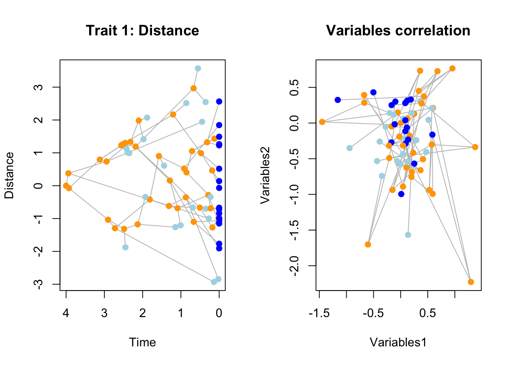
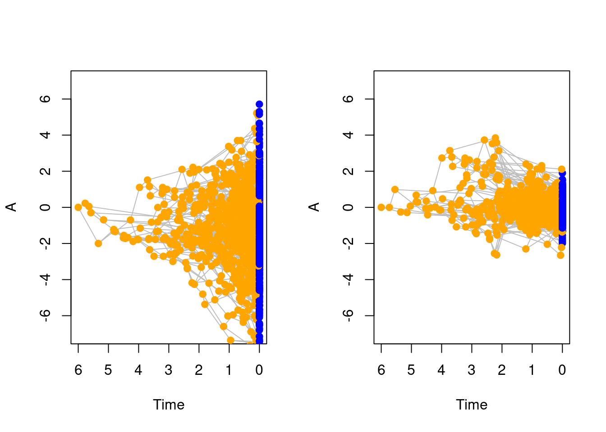
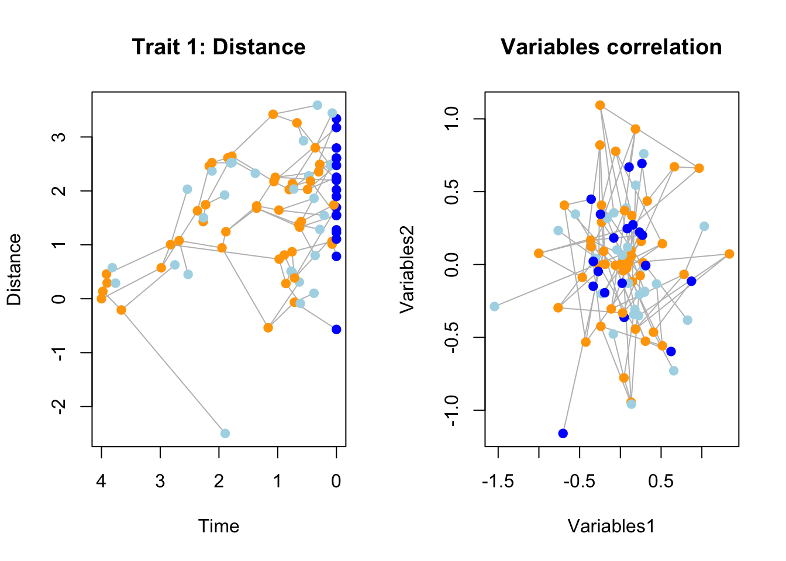

5 Adding events to simulations
One other major feature of the dads package is to allow simulations to run with specified events to occur during the simulation.
These are typically events that can drastically change the course of the simulation.
For example, you might want simulate some mass extinction at some specific point in time.
However, these can also be more subtle, like the internal change of parameter values when reaching a specific trait value.
These are all handled by dads with the events object that you can create using make.events and has the same overall logic as make.traits and make.modifiers.
events require three main arguments:
* the target which designates what the extinction should affect (e.g. the taxa, the speciation rate, etc…);
* the condition which designates when to trigger the event;
* the modification which designates what to exactly modify when the event is triggered.
There are several more arguments that can be passed to make.events but they are discussed later on.
First let’s focus on these three main arguments:
5.1 Target
The target of the event is what the event is going to modify in the birth-death algorithm.
You can only have one target per event (along with one condition and one modification) but you can create events that contain multiple events (i.e. multiple triplets of target/condition/modification).
The targets that are currently available are:
* "taxa" to modify anything linked to the lineage list. E.g. making half of the living taxa go extinct.
* "bd.params" to modify anything linked to the bd.params object. For example you might want to change the distribution of one of the parameter after some conditions. This is typically done by updating the object using the argument update from make.bd.params.
* "traits" to modify anything linked to the traits object. For example you might want to change the trait process after some conditions. This is typically done by updating the object using the argument update from make.traits.
* "modifiers" to modify anything linked to the modifiers object. For example you might want to change the speciation rule after some conditions. This is typically done by updating the object using the argument update from make.modifiers.
* "founding" this target is a bit more special and allows you run a nested dads object in the simulation. It is cover in a specific section below.
We will see some example of these targets by illustrating the conditions and modifications below.
5.2 Conditions
condition is a function that returns a logical value. When a specific condition is met, it should return TRUE and trigger the event, else it should return FALSE.
Currently there are three conditions functions implemented in dads but you can easily come up with your own version of them.
All condition functions in dads take at least to arguments: x for the variable of interest (e.g. time, number of taxa, trait value, etc…) and condition, the relational operator to evaluate. A relational operator is the proper (fancy) term designating all the comparisons you’re regularly using in R like == (is equal?) < (is smaller?) >= (is bigger or equal?). You can get the full list in the base manual (using ?Comparison or any of the relational operator in a function form).
Note on the function form of a operator in
R: if you weren’t aware, functions inRare usually described in the formatfunction(arguments), however many other functions you are commonly using are written as operators, for example (1 + 1). These are still functions though! And you can always use them in the classic function format by quoting them in back ticks: the following does the same as(1+1):`+`(1, 1). You can use that for parsing your relational operators as functions incondition. If you want you condition to be equal, use the syntaxcondition = `==`. More details on how functions really work in the AdvancedRbook!
time.conditionwill trigger theeventonce a certain time is reached in the simulations and is the simplest/more basic condition with no arguments other than the time required. For exampletime.condition(4, condition = `==`)will trigger theeventonce the simulations reached 4 units of time. Easy.taxa.conditionwill trigger theeventonce a certain number of taxa is reached. This can be considered including or excluding fossil species. For exampletaxa.condition(42, condition = `>=`, living = TRUE)will trigger theeventif there is at least 42 living species.trait.conditionwill trigger theeventonce a certain trait value is reached. This function allows to say which trait(s) to target (by default, the first one usingtrait = 1), what value of the trait to target (by defaultwhat = max) and whether to use and absolute trait value or not (absolute = TRUE). For exampletrait.condition(1/3, condition = `>`, trait = 1, what = sd)will trigger the condition after the standard deviation of the first trait reaches 1/3.
5.3 Modifications
After defining the event’s target and condition, you’ll need to also specify what it should modify.
These are basically functions that should modify a specific aspect of the target
Depending on the target you can modify the following:
- if the target is
"taxa"you can modify the internallineagelist by removing living species usingrandom.extinctionortrait.extinction. - if the target is
"taxa"you can modify the lineage tracker by removing living species usingrandom.extinctionortrait.extinction. - if the target is
"bd.params"you can modify thebd.paramsobject usingupdate.bd.params. - if the target is
"traits"you can modify thetraitsobject usingupdate.traits. - if the target is
"modifiers"you can modify themodifiersobject usingupdate.modifiers. - (for the
"founding"target see below)
The most straightforward example if for modifications on bd.params, traits or modifiers objects since they use the same syntax as for their generic make.X function.
For example, for make.traits, you can update a trait using the update argument as follows:
## A BM trait in two dimensions
(BM_2D <- make.traits(n = 2, process = BM.process))## ---- dads traits object ----
## 2 traits for 1 process (A:2) with one starting value (0).## Updating the 2D BM into a 2D OU
(OU_2D <- make.traits(update = BM_2D, process = OU.process))## ---- dads traits object ----
## 2 traits for 1 process (A:2) with one starting value (0).So basically the functions update.X apply the update to the object X when the event happens.
The following event updates the bd.params object by setting the extinction parameter to 1/3 when reaching a 10 species:
make.events(target = "bd.params",
condition = taxa.condition(10, condition = `>=`),
modification = update.bd.params(extinction = 1/3))Note that by default events are triggered only once in the whole simulation, so although the example above states that the condition is reaching at least 10 taxa, it will not trigger every times it reaches more than 10 taxa. You can change the number of times the events can be triggered using the argument
replications(by default it’s set toreplications = 0for triggering it only once).
5.4 Examples
Here are some example illustrating how to generate events. For a simple example, we can create a extinction event that will remove 80% of species after reaching time 4:
## 80% mass extinction at time 4
mass_extinction <- make.events(
target = "taxa",
condition = time.condition(4),
modification = random.extinction(0.8))
## Simulation parameters
stop.rule <- list(max.time = 5)
bd.params <- list(extinction = 0, speciation = 1)
## Running the simulations
set.seed(123)
results <- dads(bd.params = bd.params,
stop.rule = stop.rule,
events = mass_extinction)
## Plotting the results
plot(results, show.tip.label = FALSE)
axisPhylo()
Or for a slightly more complex example, we can can change the trait process from a BM to an OU when the trait values reaches an upper 95% quantile value above 2:
## The 95% upper quantile value of a distribution
upper.95 <- function(x) {
return(quantile(x, prob = 0.95))
}
## Create an event to change the trait process
change_process <- make.events(
target = "traits",
## condition is triggered if(upper.95(x) > 3)
condition = trait.condition(3, condition = `>`, what = upper.95),
modification = update.traits(process = OU.process))
## Set the simulation parameters
bd.params <- list(extinction = 0, speciation = 1)
stop.rule <- list(max.time = 6)
traits <- make.traits()
## Run the simulations
set.seed(1)
no_change <- dads(bd.params = bd.params,
stop.rule = stop.rule,
traits = traits)
set.seed(1)
process_change <- dads(bd.params = bd.params,
stop.rule = stop.rule,
traits = traits,
events = change_process)
## Plot the results
par(mfrow = c(1,2))
plot(no_change, ylim = c(-7, 7))
plot(process_change, ylim = c(-7, 7))
5.5 Founding events
Founding events are a specific target for events that allows you to… simulate a birth-death process within the current one!
It basically allows you to simulate a specific dads process i.e. using the dads function with it’s own traits, modifiers, bd.params and events (and yes, that’s including events that have their own founding event)…
This is basically the ultimate nested boss of modularity!
The founding event will basically run an internal dads process (i.e. simulating a tree and, optionally, some data) resulting in a founding sub-tree.
It will then branch this sub-tree to the rest of the simulation that continued normally in the mean time.
You can specify the founding event using the inbuilt founding.event modification event.
This function intakes the exact same arguments as dads to simulate the sub-tree with its own parameters.
Additionally, we will use the additional.args argument from make.events to specify a prefix for the founding tree tips (to make them easier to distinguish).
## Set up parameters
stop.rule <- list(max.time = 4)
bd.params <- make.bd.params(speciation = 1, extinction = 0.3)
## Events that generate a new process (founding tree - with no extinction)
founding_event <- make.events(
target = "founding",
condition = taxa.condition(10),
modification = founding.event(
bd.params = make.bd.params(speciation = 2,
extinction = 0)),
additional.args = list(prefix = "founding_"))
## Simulations
set.seed(11)
founding_tree <- dads(bd.params = bd.params,
stop.rule = stop.rule,
events = founding_event)
plot(founding_tree, cex = 0.4)
Note that the nestedness here is potentially endless, for example, you can parse an event argument to the founding.event that will generate another founding event, etc…